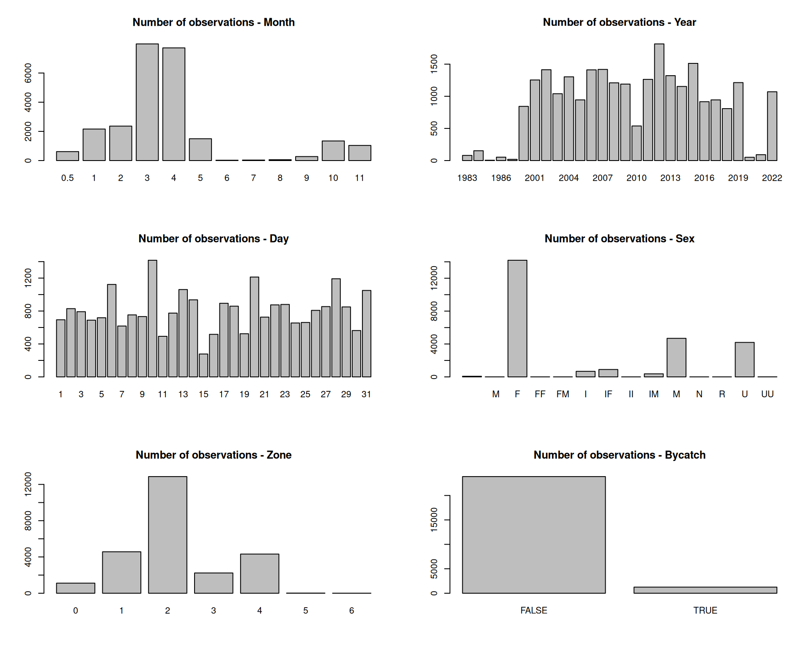
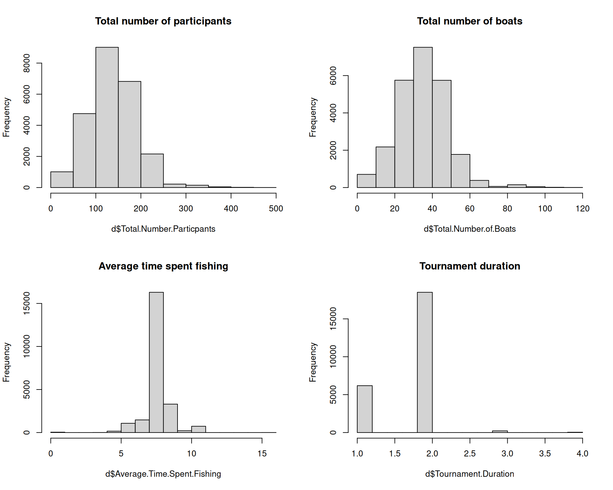
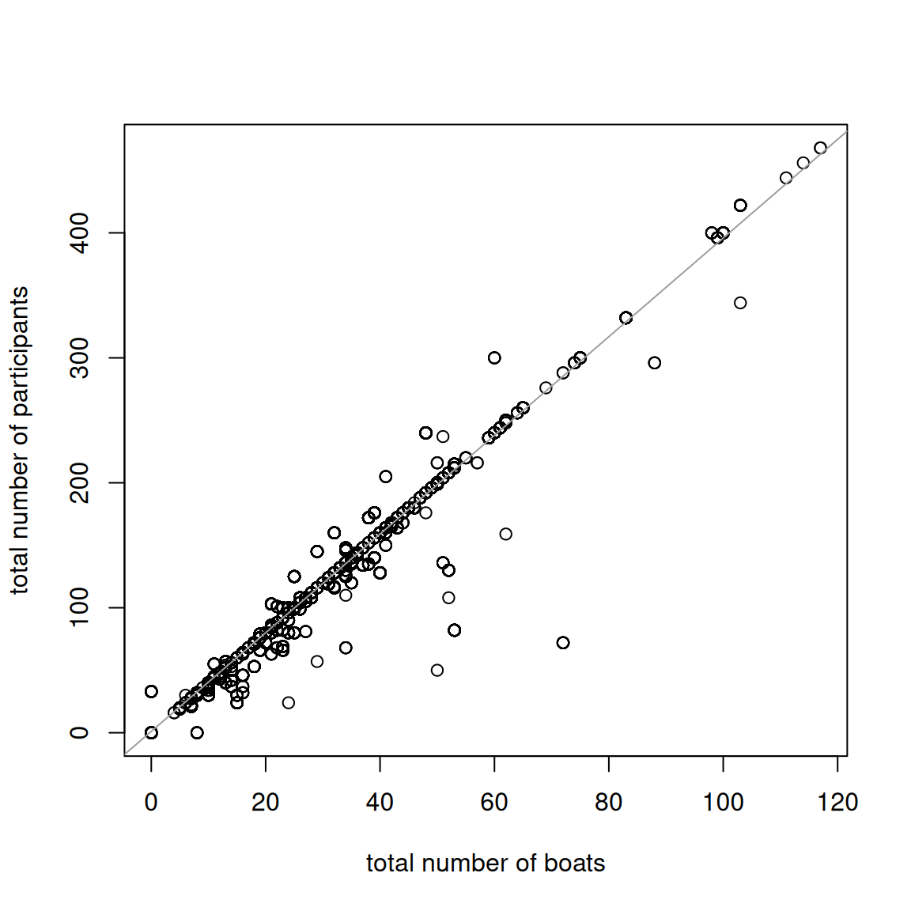
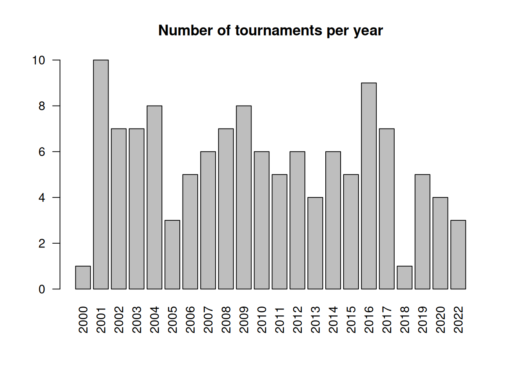
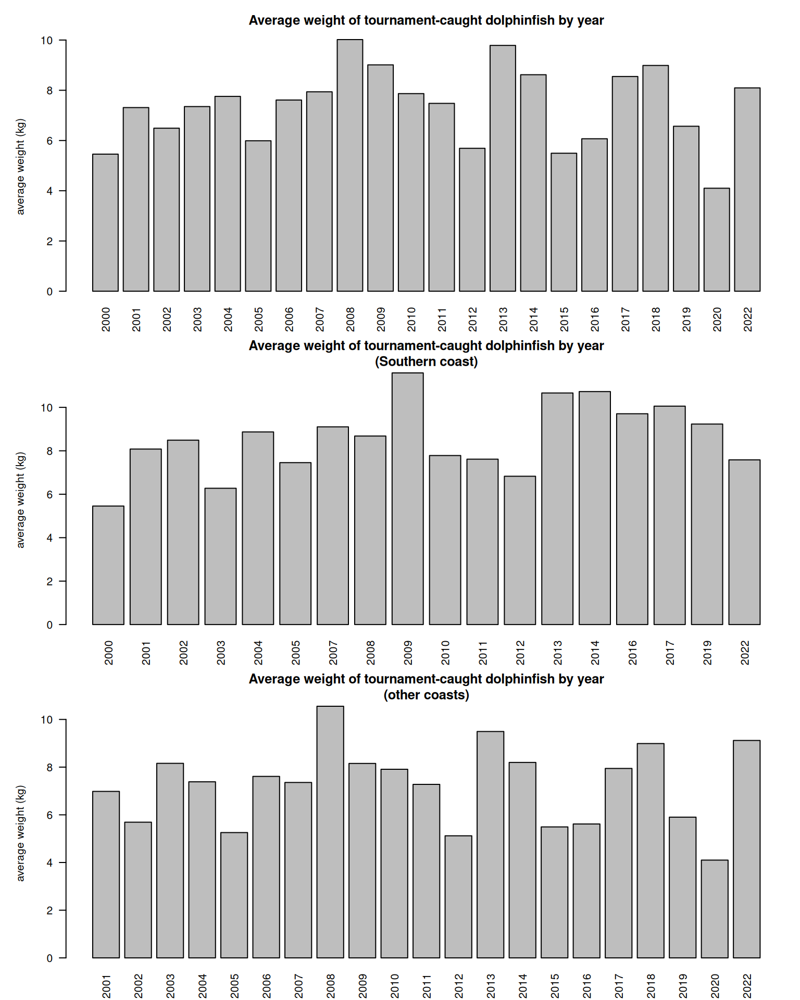

In this section we consider tournament data from the U.S. Caribbean as a potential predictive index for dolphin abundance in the South Atlantic. Because dolphin migrate through the Caribbean region in the months before arriving in South Atlantic waters, peaks in catch-per-unit effort for fisheries operating in the Caribbean could potentially be indicative of high abundances later in the year in waters downstream of their migration patterns. Tournament data are available from Puerto Rico’s Departamento de Recursos Naturales y Ambientales, División de Pesquería Recreativa y Deportiva, going back to the year 2000. Tournament data were requested and received from the institution in June 2022.
10.1 Upload and clean data set
We first input the data set, parse out the dates to extract month and year, and standardize labeling of months.
# clear workspacerm(list =ls())if(!require("dplyr")) install.packages("dplyr")if(!require("emmeans")) install.packages("emmeans")library(dplyr)library(emmeans) # Best for extracting standardized indices# import data -------------------------------------d <-read.csv("data/PRDNER-DolTournamentData.csv") #apply(d, 2, table)head(d)
Date Location Total.Number.Particpants
1 May-6-00 Club N\xe1utico de La Parguera 124
2 May-6-00 Club N\xe1utico de La Parguera 124
3 May-6-00 Club N\xe1utico de La Parguera 124
4 May-6-00 Club N\xe1utico de La Parguera 124
5 May-6-00 Club N\xe1utico de La Parguera 124
6 May-6-00 Club N\xe1utico de La Parguera 124
Total.Number.of.Boats Average.Time.Spent.Fishing Tournament.Duration
1 31 10.5 2
2 31 10.5 2
3 31 10.5 2
4 31 10.5 2
5 31 10.5 2
6 31 10.5 2
Fish.Type Fish.name Sex Boarded Bycatch Lenght..mm. Weight..Kg.
1 8835290101 Dolphinfish F TRUE FALSE 1675 9.09
2 8835290101 Dolphinfish F TRUE FALSE 1675 6.81
3 8835290101 Dolphinfish M TRUE FALSE 1675 10.45
4 8835290101 Dolphinfish F TRUE FALSE 1625 10.00
5 8835290101 Dolphinfish F TRUE FALSE 1625 12.27
6 8835290101 Dolphinfish F TRUE FALSE 1625 10.00
Distance.to.coast Zone
1 2
2 2
3 2
4 2
5 2
6 2
# clean dates and extract month day year ---------d$Date <-as.character(d$Date)d$month <-NAd$day <-NAd$year <-NAfor (i in1:nrow(d)) {# M d[i, 16:18] <-unlist(strsplit(d$Date[i], "-")) }#head(d)# clean up errors and check outputs ---------------------d$month <-substr(d$month, 1, 3)d$month[which(d$month =="Abr")] <-"Apr"d$month[which(d$month =="Arp")] <-"Apr"d$day[which(d$day =="November"| d$day =="December")] <-NAd$year[which(d$year =="November"| d$year =="December")] <-NAd$day <-as.numeric(d$day)d$year <-as.numeric(d$year)# standardize year formatd$year[which(d$year <83)] <- d$year[which(d$year <83)] +2000d$year[which(d$year <2000)] <- d$year[which(d$year <2000)] +1900d$mon <-match(d$month, month.abb)table(d$month)
Apr Aug Dec Feb Jan Jul Jun Mar May Nov Oct Sep
7723 57 614 2360 2160 35 23 7995 1496 1036 1344 273
In keeping with the definition of seasons in other parts of the MSE, we group December with the following January and February in a winter season.
# fix so Dec is grouped with following year -----------------d$mon[which(d$mon ==12)] <-0.5d$year2 <- d$yeard$year2[which(d$mon ==0.5)] <- d$year[which(d$mon ==0.5)]+1rbind(table(d$year), table(d$year2))
Let’s take a look at some of the data columns using barplots and histograms.
# look at data columns ----------------------------------par(mfrow =c(3, 2))barplot(table(d$mon), main ="Number of observations - Month")barplot(table(d$year), main ="Number of observations - Year")barplot(table(d$day), main ="Number of observations - Day")barplot(table(d$Sex), main ="Number of observations - Sex")barplot(table(d$Zone), main ="Number of observations - Zone")barplot(table(d$Bycatch), main ="Number of observations - Bycatch")

par(mfrow =c(2, 2))hist(d$Total.Number.Particpants, main ="Total number of participants")hist(d$Total.Number.of.Boats, main ="Total number of boats")hist(d$Average.Time.Spent.Fishing, main ="Average time spent fishing")hist(d$Tournament.Duration, main ="Tournament duration")

There are a few NAs in the tournament data columns. We need to consider what details are available and what factors we can feasibly use in the standardization process.
# find NAs in tournament details -------------------table(is.na(d$Total.Number.of.Boats))
plot(d$Total.Number.of.Boats, d$Total.Number.Particpants, xlab ="total number of boats", ylab ="total number of participants")out <-lm(d$Total.Number.Particpants ~ d$Total.Number.of.Boats)abline(out, col =8)

The total number of boats is highly correlated with the total number of participant and the linear regression indicates that most boats have 4 participants.
10.3 Data preparation for standardization
In preparation for creating a standardized catch-per-unit-effort (CPUE) index that can serve as a proxy for abundance, we have to specify nuisance factors in the data set that have to be accounted for. We create a unique tournament ID number with a combination of the day and number of participants.
# create unique tournament ID number -------------------------d$dat <-paste0(d$day, d$month, d$year)length(unique(paste0(d$day, d$month, d$year, d$Total.Number.Particpants)))
We remove all cases where dolphin is not listed as the target species; we will use only directed dolphin trips in the standardization. We also specify the months that we want to include in the index of abundance. Here we specify December to MArch With this subset of months, we have 128 unique tournaments in the data base across 121 different dates.
# remove non-target cases; use only directed trips -------------------dfull <- dd <- d[which(d$Bycatch ==FALSE), ]# subset by season, e.g. 0 - 4 is December to April -------------------d <- d[which(d$mon >=0& d$mon <=3), ]#length(unique(d$Date))length(unique(d$dat))
[1] 121
length(unique(d$datID))
[1] 128
Next we calculate the total weight by tournament, by summing the reported weights across each tournament ID. We then set up a new data frame where each tournament is a row, and columns represent the attributes of each tournament (year, month, zone, participants, number of boats, fishing time, duration, total weight and total abundance). We also calculate the average weight by dividing total weight by total abundance.
# calculate total by tournament ----------------------------totWT <-tapply(d$Weight..Kg., d$datID, sum, na.rm = T)totN <-table(d$datID)mon <-tapply(d$mon, d$datID, mean, na.rm = T)year <-tapply(d$year2, d$datID, mean, na.rm = T)# checks on month and tournament assignments ----------------------#table(d$year[d$mon == 0.5], d$year2[d$mon == 0.5])#table(d$year[d$mon != 0.5], d$year2[d$mon != 0.5])max(tapply(d$Total.Number.Particpants, d$datID, sd), na.rm = T) # should all be zeros
There are a number of missing values in this data frame. For fishing time and number of boats, we impute the median of the known values into the missing values. For missing values for the number of boats, we take the number of participants and divide by 4 (given the relationship established above). If both values are missing, we impute the median into the unknown values.
# fill in NAs ---------------------------------------------------dat$Nboat[which(dat$Nboat ==0)] <-NAdat$Npart[which(dat$Npart ==0)] <-NAdat$Ftime[which(dat$Ftime ==0)] <-NA#hist(dat$Ftime)which(is.na(dat$Ftime))
Finally, we subset the years. Data are very sparse prior to 2000 so we only include the data for 2000 and forward. We calculate the catch-per-unit-effort, defining catch as the total abundance, and effort as the number of boats multiplied by the average time spent fishing.
#dat$cpue[which(dat$cpue == "Inf")] <- NAbarplot(table(dat$year), las =2, main ="Number of tournaments per year")

The plot shows the number of tournaments per year. We can see that there are relatively few events for each year.
10.4 Analyze the nominal CPUE trends
Now using this clean data set we can look at the nominal (average) CPUE by year. We first look at the average weight across all tournaments, and weight by the northern and southern coasts. The weights appear to be highly variable across year and coasts.
# look at nominal trends ----------------------------par(mfrow =c(3, 1), mar =c(3, 5, 3, 1))barplot(tapply(dat$avwt, dat$year, mean, na.rm = T), las =2, main ="Average weight of tournament-caught dolphinfish by year", ylab ="average weight (kg)")d2 <- dat[which(dat$zone ==2), ]barplot(tapply(d2$avwt, d2$year, mean, na.rm = T), las =2, main ="Average weight of tournament-caught dolphinfish by year\n(Southern coast)", ylab ="average weight (kg)")d2 <- dat[which(dat$zone !=2), ]barplot(tapply(d2$avwt, d2$year, mean, na.rm = T), las =2, main ="Average weight of tournament-caught dolphinfish by year\n(other coasts)", ylab ="average weight (kg)")

# look at nominal trends by year, month and zonebarplot(tapply(dat$cpue, dat$year, mean, na.rm = T), las =1, main ="Average CPUE of tournament-caught dolphinfish by year", xlab ="year", ylab ="CPUE")barplot(tapply(dat$cpue, dat$mon, mean, na.rm = T), las =1, main ="Average CPUE of tournament-caught dolphinfish by year", xlab ="month", ylab ="CPUE")barplot(tapply(dat$cpue, dat$zone, mean, na.rm = T), las =1, main ="Average CPUE of tournament-caught dolphinfish by year", xlab ="zone", ylab ="CPUE")
There appears to be high variability in the CPUE by year. The highest CPUE appears to occur in December and March. CPUE also varies by zone, the Southern coast having the highest catch rates. CPUE based on number and weight are highly correlated.
10.5 Calculate standardized CPUE trends
Now we will carry out the standardization, using day, month and zone as standardization factors. Since the catch rates are highly skewed, we carry out the standardization based on the log CPUE.
# estimated coefficients from standardizationind <-emmeans(out, "year", type ="response") %>%as.data.frame()names(ind)[1] <-"Year"
Finally, we compare the standardized CPUE with the nominal CPUE. The two time series are somewhat closely related, indicating similar years of low and high relative abundance.
# look at nominal vs standardized index ------------------------plot(yrs, ind$response, type ="l", lwd =2, col =4, main ="Nominal versus standardized CPUE from dolphin tournament data",xlab ="year", ylab ="CPUE (fish / (boats x time))", ylim =c(0, 1.4))points(yrs, ind$response, pch =1, lwd =2, col =4) lines(yrs, ind$lower.CL, col =4, lty =2)lines(yrs, ind$upper.CL, col =4, lty =2)lines(yrs, tapply(dat$cpue, dat$year, mean, na.rm = T) *1.0, col =2, lwd =2)points(yrs, tapply(dat$cpue, dat$year, mean, na.rm = T) *1.0, col =2, lwd =2, pch =1)legend("topleft", c("nominal", "standardized"), lwd =2, pch =19, col =c(2, 4), bty ="n")
Finally, let’s look at how our standardized index compares to the South Atlantic landings. We experimented with CPUE in both units of abundance and weight, and for different combinations of winter months (e.g., Dec - Feb, Jan - Apr). The highest correlation with South Atlantic landings occurs with tournament data from December to March with CPUE based on abundance. In this case the tournament data describes 18% of the variation in South Atlantic landings, with 2015 as a well above-average outlier in both the tournament CPUE and the landings.
rec <-read.csv("data/recLandings.csv")names(rec)[1] <-"Year"rec$ATL <-rowSums(rec[3:6], na.rm = T)d <-merge(rec, ind, by ="Year")plot(d$response, d$ATL, col =0)text(d$response, d$ATL, d$Year, col =1)out <-lm(d$ATL ~ d$response)abline(out, col =8)summary(out)
Call:
lm(formula = d$ATL ~ d$response)
Residuals:
Min 1Q Median 3Q Max
-4903925 -2455191 -1423045 2822339 8784468
Coefficients:
Estimate Std. Error t value Pr(>|t|)
(Intercept) 11967878 1891752 6.326 4.52e-06 ***
d$response 10715966 4617982 2.320 0.0316 *
---
Signif. codes: 0 '***' 0.001 '**' 0.01 '*' 0.05 '.' 0.1 ' ' 1
Residual standard error: 3819000 on 19 degrees of freedom
Multiple R-squared: 0.2208, Adjusted R-squared: 0.1798
F-statistic: 5.385 on 1 and 19 DF, p-value: 0.0316